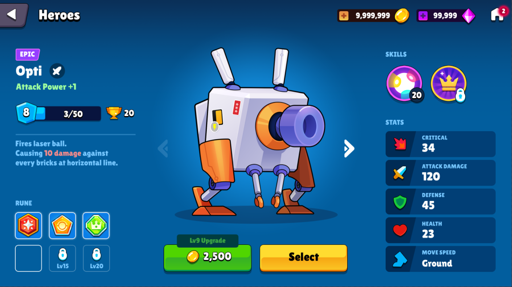
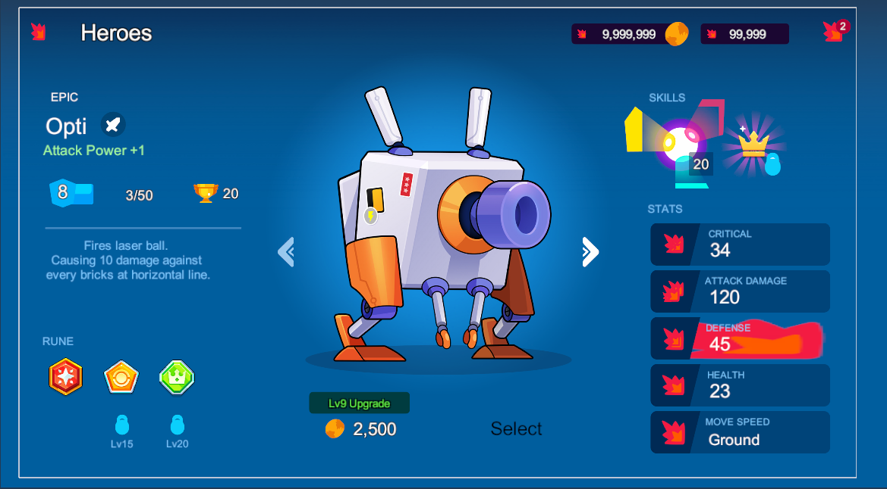
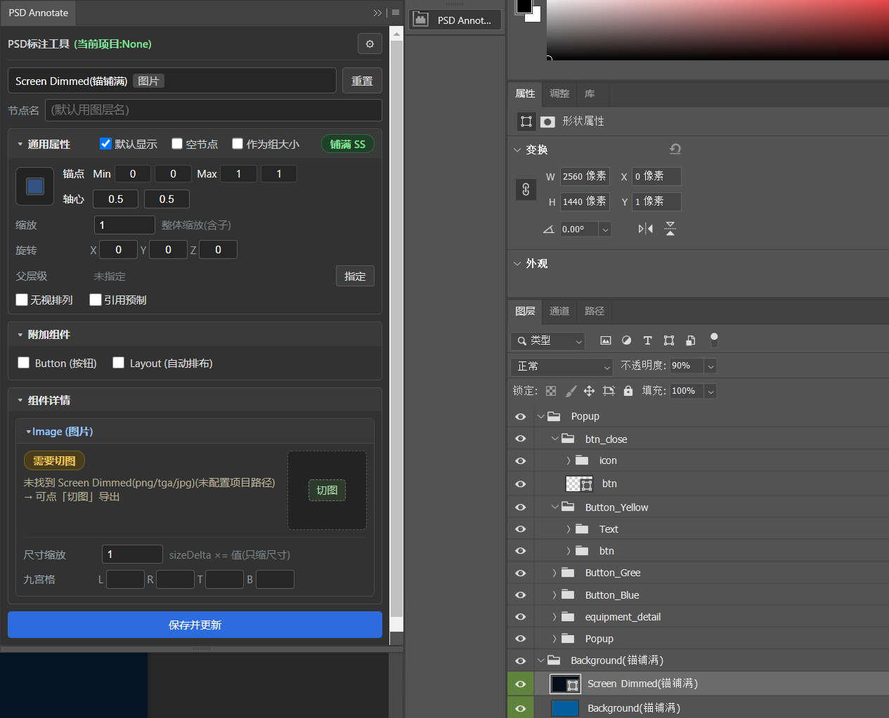
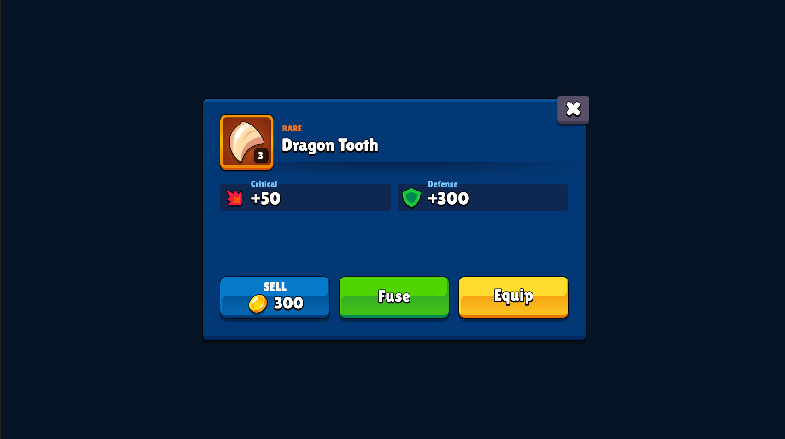
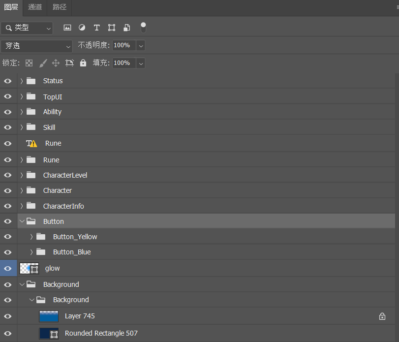
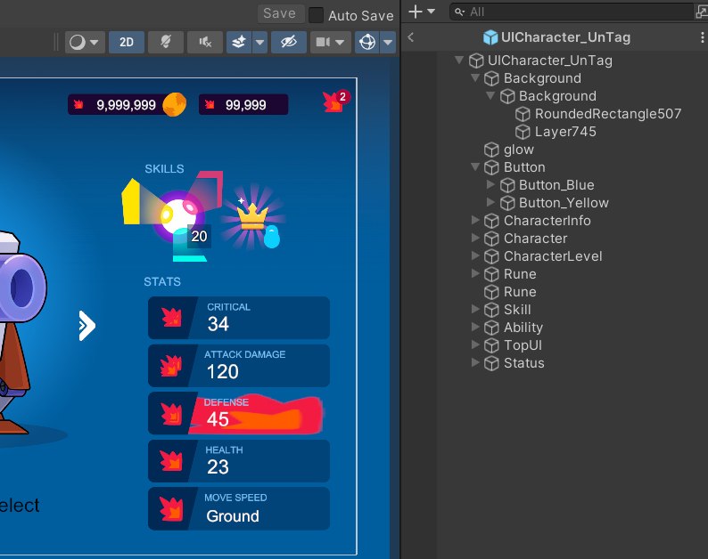
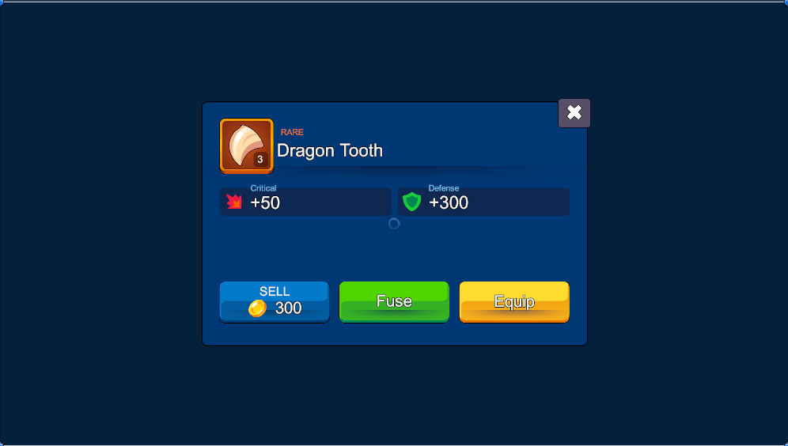
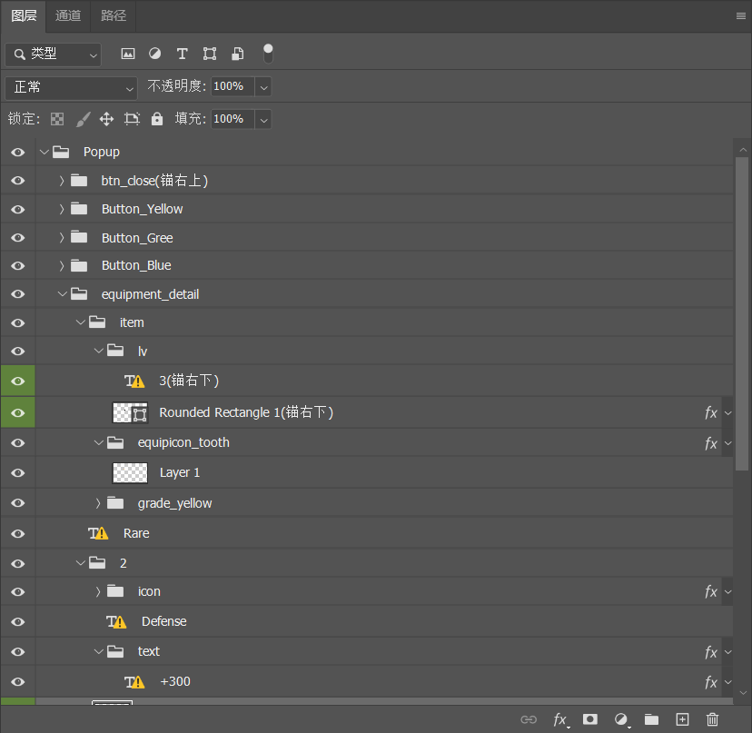
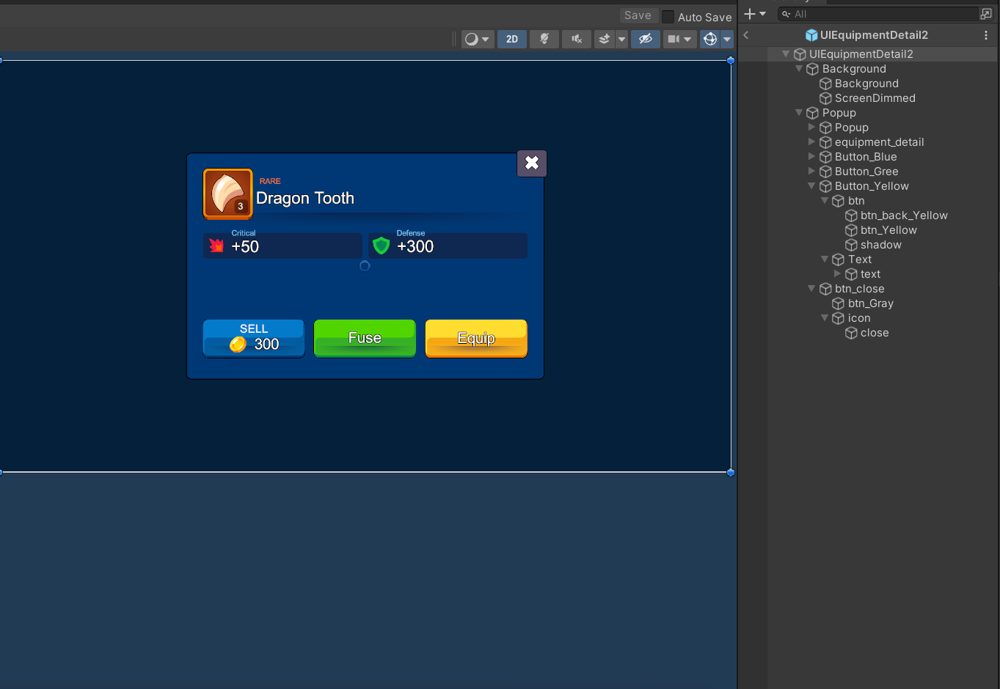
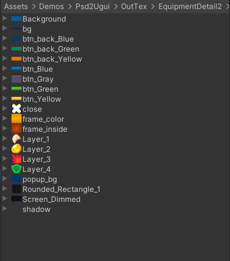

从PSD到Unity UGUI预研
项目简介：传统UI开发中，UI 美术手动切图、程序在Unity中手搭 Prefab、配Anchor、挂组件耗费大量重复性劳动，且极易出现还原度偏差。最终产出的UI和设计的有明显差异，UI和客户端沟通成本非常高
这个工具预研构目的是建一套打通 Photoshop 与 Unity 的自动化 UI 还原管线，实现 PSD 图层树到 Unity UGUI Prefab 的 1:1 确定性转换
注意:所有PSD来自于商店插件,纯测试使用
效果对比
1. 原始PSD直接输出右侧预制体和PSD有50%相似度,还有很多问题
字体不一致,这个需要制作人员提供字体
一些图标用错了,甚至是缺失状态
Mask基本失效
其他的位置,层级和PSD能完全对上


Prefab层级和PSD完全一致,名字能对应
相对位置正确,但是没有正确的锚点信息,没法做到自适应

为了快速展示效果,选了一个节点相对较少的PSD,主要在PSD中进行了一些干预,整体还原度更高了
首先图标没有缺失了,插件自动导出的贴图按以命名为准,设计PSD不能不同图标是一个相同名字
可以在插件标记锚点Anchor,Pivot,以及一些常用组件,比如Button等等


PS 插件设置,Unity导出资源预览

当前不足与演进方向
当前插件还在研发中阶段,有些问题还需要继续跟进依赖美术在 PS 端的手动标注（将排版工作量部分转移到了美术侧）
对于复杂的动态布局（如嵌套 LayoutGroup）需要调整支持
一些Bug修复等等
AI 智能预标注：根据 PSD 图层位置等信息，自动推断 UI 类型与 Anchor 贴边逻辑（替代 PS 插件手动勾选）
规范化 PSD 生成：向前端延伸，利用 AI 自动生成结构合规、图层分明、命名规范的源 PSD 文件，真正实现从“设计概念”到“Unity 界面”的全流程无缝自动化